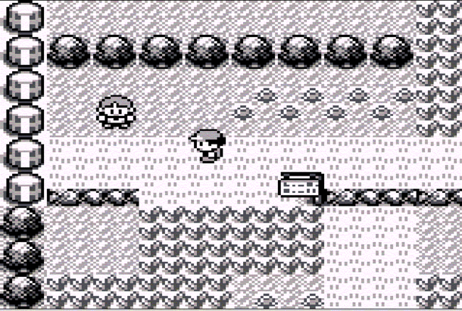

![a diagram of a directed graph. The start node is A, which has only outbound arrows. A is connected to B with weight 5. A is connected to C with weight 4. A is connected to D with weight 1. D is connected to G with weight 1. B is connected in both directions with C with weight 1. C is connected to F with weight 10. G is connected to F with weight 2. F is connected to E with weight 1. B is connected bi-directionally with E with weight 3. E is connected to Z with weight 5. G is connected to Z with weight 10.](digraph1.svg)
These notes are © Grant Williams, CC BY-SA 4.0.
This is an open educational resource. Feel free to submit fixes, improvements, and new material here.
Last week we learned about dynamic programming.
We saw some simple 1-dimensional DP problems.
We saw how DP is important when solving overlapping sub-problems.
For example, to avoid re-computing Fibonacci terms over and over again, we could save them in a table. To avoid counting-out the same amount of change, we could save it in a table.
Generally, DP involves some amount of tables.
Now it’s time to put that knowledge to the test. DP is a very common algorithm approach when dealing with graphs.
A lot of graph algorithms would otherwise be combinatorial, but they become fast, efficient P-time algorithms when we find ways to define sub-problems and tabulate or memoize them.
But first, let’s recall how to work with graphs at all…
There are fundamentally four ways to store a graph: - Local adjacency lists - Global edge lists/maps/sets - Adjacency matrices - Implicitly
All are common, all are useful for different kinds of graphs.
There are also two kinds of graphs: directed and undirected.
We’ll look at each one, but first, consider this graph…
This is a directed graph. Some of the connections are symmetric, but it is only considered undirected if every connection is symmetric.
We don’t have any bi-directional connections with non-symmetric weights, but we could. It’s permitted to do that (I just thought the diagram would look nicer without).
Recall that one way to store the graph was with adjacency lists. This means that we associate a list of neighbors with each node. Typically, this list is also where we store the edge weights.
struct node_t; // forward declaration so we can refer to node_t* in edge_t
typedef struct edge_t {
struct node_t* neighbor;
int weight;
} Edge;
typedef struct node_t {
size_t n_neighbors;
Edge* neighbors;
// We can have per-vertex data here too if we want: void* vert_data;
} Node;Let’s use our structs to build the graph from before. It’s easiest if we first create our nodes, and then define our edge lists, both on the stack.
First, the nodes, the number is the number of neighbors:
Node a = {3, NULL};
Node b = {2, NULL};
Node c = {2, NULL};
Node d = {1, NULL};
Node e = {2, NULL};
Node f = {1, NULL};
Node g = {2, NULL};
Node z = {0, NULL};Notice how the edges are all null. We’ll overwrite the
NULLs with valid edge lists soon.
Now we need to create the neighbors. I’ll define some of them; I’ll leave the rest to you.
Edge a_neigh[] = {{&b, 5}, {&c, 4}, {&d, 1}};
Edge b_neigh[] = {{&c, 3}, {&e, 1}};
Edge c_neigh[] = {{&f, 10}};
// ... fill in the restOnce we create these edge lists, we can hook them into the graph by setting the neighbors field in each node:
a.neighbors = a_neigh;
b.neighbors = b_neigh;
c.neighbors = c_neigh;
// ...At this point, our graph is ready to use
However, having to define everything on the stack is rather limiting. What if we’re loading graph data from a file, and therefore we don’t know exactly which nodes we need ahead of time?
In that case, we can allocate a big array of nodes:
Node* arena = malloc(number_we_need * sizeof(Node));And then, because our nodes are laid out in an arena in a defined
order, we can also iterate over that for loop and malloc
the neighbors, too.
This also gives us the flexibility to refer to nodes by an ID instead by pointer. This is useful both for stability (e.g., when serializing/deserializing) and also to save space: if we have fewer than about 4.2 billion nodes, we can use an unsigned 32-bit integer.
We can also use our pool-based memory managent here if we want, because each node is the same size in memory.
We can also store the neighbors in an array list, linked list, hashtable, or tree. All of these data-structures can grow dynamically so we don’t need to pre-allocate space for all our neighbors. Here it is as a linked list:
typedef struct edge_t {
struct node_t* neighbor;
struct edge_t* next; // in linked list
int weight;
} Edge;
typedef struct node_t {
Edge* first_edge; // don't need n_neighbors since it's implicit now
} Node;So the key to using adjacency-list graphs is that we store nodes.
Each node has a list of neighbors inside of it.
We often attach a weight to each neighbor, using an edge struct.
Memory management is complex: we need to decide where nodes will live and where their adjacency list will live.
If we need to store per-node information and the graph is sparse, this is a reasonable way to store graphs. Also if we need to answer questions about who a vertex is connected to, or to do basic vertex-based searching, such as DFS.
Otherwise, one of the other ways might be better…
Some algorithms are very “edge focused”, like Kruskal’s Algorithm, which computes a minimum spanning tree from a given graph.
A minimum spanning tree is a subset of a graph that connects to every node while having the smallest possible sum of edges. It has no cycles and is undirected, which is why we call it a tree.
You could imagine this being useful for connecting houses into a telecom network.
Kruskal’s algorithm operates over a sorted list of edges, so it’s much more efficient if we just store our graph as a list of edges, rather than requiring the algorithm to search through all the adjacency lists inside all the nodes.
Another example is the Bellman-Ford shortest path algorithm, which finds the shortest path from one node to every other node by gradually finding shorter edges.
Finally, it’s common for file formats that store graphs to store them in this style. For example, the mermaid diagrams that I use in these lectures are textual edge-lists.
The simplest way to store an edge list is with an array:
typedef struct edge_t {
int source;
int dest;
int weight;
} Edge;
Edge edge_list[] = {{0, 1, 100}, {1, 2, 50}, {0, 2, 25}, ...};Notice that I’m storing the source and destination nodes as integers.
There is no “node” structure here. There could be, but there doesn’t have to be. In this representation, we usually just care that two nodes are connected, rather than putting data inside the nodes themselves.
Here, the fact that two nodes have different integers makes them different.
However, there’s no reason why we couldn’t use string IDs: there might be some memory management, but we can still compare them efficiently with SIMD if we avoid making the names too long.
We could also have node structures as before if we need to associate data with nodes, and have pointers to them in our edge structure. It’s permitted but not required.
One issue with edge-lists, though, is that we need to organize the list.
If the list is not ordered, then any kind of query will be \(\Theta(|E|)\) time on average, which is unacceptable for most applications.
Kruskal’s algorithm relies on the list being sorted by edge weight.
So why not sort the edges using qsort? This will take \(\Theta(|E| \lg |E|)\) on average, but we
only need to do it once. We just need to iterate over this list in
order.
Alternatively, what if we want to determine who the neighbors of a particular node are? Then we can sort by the source id instead. Now a quick binary-search through the list will let us find all the edges out of source.
This raises the biggest drawback of edge lists, though: the need for the edge lists to be in a particular order.
Sorting isn’t slow, and if we know something about our distribution of source or dest IDs, there might be shortcuts (like counting sort).
We could also store our edges in a tree instead, sorted by the index we choose (like weight or source). We could also use a hashmap, but then we wouldn’t be able to get every neighbor of a particular node (if that’s not required, this is a good solution)
If we want to have multiple kinds of queries, we would need multiple copies of edge lists, sorted differently. This can be problematic if we need to insert a new edge. Workflows with random insertion and deletion probably require using a tree.
So far, we’ve seen two graph data-structures that are based on lists, or some other data structure that supports iteration.
However, in most graph applications, two nodes are connected at most once.
If this is true, there is a limit to how many connections there can be.
Suppose there are \(|V|\) nodes. What is the limit to the number of edges (\(|E|\))?
It turns out, \(|E| \le |V|^2\).
That is, every vertex can be connected to every other vertex, which means that there are \(|V|\) vertices for every vertex, hence \(|V|^2\).
If every vertex is connected to every distinct vertex in a graph, we call it complete.
If most vertices are connected, we call the graph dense. This is a subjective term, of course, but generally there’s a point at which a graph is complete enough for the following representation to be effective…
An adjacency matrix is basically a giant matrix of numbers, where each number tells us the weight of one edge.
The row is typcially the source and the column is typically the destination, simply because row-major is a common way of laying out 2D arrays in most languages.
To look up an edge value, we typically write
matrix[row][col].

This matrix corresponds to the graph in the previous slide:
| - | A | B | C | D |
|---|---|---|---|---|
| A | - | 10 | 15 | 10 |
| B | - | - | 2 | - |
| C | - | 3 | - | 2 |
| D | 1 | - | - | - |
The row is the source, and the column is the destination.
Adjacency matrices are very fast at answering one, specific question: What is the weight of the edge between A and B.
They can be wasteful: if we have 100 vertices, that’s a 100 by 100 matrix. What if the graph is sparsely connected? Like, maybe there are 200 edges. Then we’ve wasted a ton of memory.
It might be worth it though: edge lookups in this format are constant time.
So what defines whether a graph is dense, or the opposite, sparse?
The only real downside to an edge matrix is its memory consumption.
Suppose we use the edge data structure we looked at previously for the edge-list representation. How much space does an edge take to represent?
typedef struct edge_t {
int source;
int dest;
int weight;
} Edge;What do we expect sizeof(Edge) to be on a typical 32 or 64-bit machine?
In this case, 12 bytes. If we used pointers for source and dest, it would be 24 bytes (because 4 bytes of padding would be inserted after weight. Read this to learn why.)
On the other hand how big do we expect the adjacency matrix to be?
[Class?]
In this case, there is space allocated for \(4 \times 4 = 16\) edges.
Each weight is an int, and sizeof(int) is usally 4.
Therefore we expect it to use 64 bytes.
Is that a lot? Well, there are 7 edges. So, amortizing it: roughly \(9.14\) bytes per edge.
On the other hand, our edge struct required \(12\) bytes per edge. So the matrix is more efficient for this particular graph.
We can think of one definition of dense as being a graph with enough edges so that the matrix is more efficient than the list.
But our graph only has 7 out of 16 edges! And it’s still more efficient? Why even bother with edge lists if the matrix is so good?
Because what happens if we add another node?
Now we have \(5 \times 5 \times 4 = 100\) bytes to store instead of 64. And if we add another? \(6 \times 6 \times 4 = 144\) bytes. It’s quadratic, so we keep adding more and more each time we add one node.
In applications where we might have a lot of sparsely connected nodes, this does not work at all. Imagine if there were 1 million nodes? How many ints would we need to allocate?
A million nodes is completely forseeable. A GPS or pathfinding database can easily have more. 3D scenes, connectivity graphs, many different realistic data structures can easily exceed this.
And yet, that’s 1 trillion ints. How many ints can fit in your computer if you have 64 GB of ram? Exactly \(68\;719\;476\;736\) ints.
That’s around 69 billion. So it wouldn’t even fit in RAM even with lots of it and with theoretically your entire memory dedicated to storing this one graph.
However, this is assuming the graph is sparse (meaning: the matrix wastes space). If the graph is dense, then the matrix doesn’t waste space, and it might just be impossible to store the whole thing in RAM at once. It might need to be broken up.
And yet the adjacency matrix is super easy to use. Just allocate a big 2D array (or a 1D and do the math for row-column access).
If you’re doing a competitive programming or interview problem, and it’s clearly a graph problem with \(\le 1000\) nodes, that can be a hint that an adjacency matrix is appropriate.
It’s easy to set up, easy to use, and maximally fast at determine whether two nodes are connected and what that connection’s weight is.
If the graph is dense, iterating over all the neighbors of a node is going to be on average \(\Theta(|V|)\), which is as good as an adjacency-list.
There are two basic data layouts we typically use for an adjacency matrix: 1. A 2D array: works in C, but in some languages, either not available, or involves indirection, which is slow. 2. A 1D array: works in any language with arrays
In C, we can easily allocate a 2D array on the stack:
int mat[200][200];Unfortunately, we often can’t do this. Stacks have limited sizes, and matrix representations of graphs can easily overflow it. Even for static memory, especially on Windows, there are limits. So how can we fix that?
If we know the size of the matrix, we can store it as a fixed-size array of rows:
int (*mat)[200] = malloc(200 * sizeof *mat);Pay close attention to the parentheses on the left. This is different:
int *mat[200] = malloc(200 * sizeof(int*)); // wrongThe first one defines mat to be a pointer to arrays of
200 ints. That means we can index mat[row] to get one of
these arrays, and mat[row][col] to get an element. This is
what we want, because it means the array is densely packed.
[What is the second one?]
The second one defines mat to be an array of 200 pointers. However, then the malloc is erroneous, because the array of poitners is on the stack. Instead, we would have to iterate over that array and malloc a row for each pointer. Accessing an edge weight would require extra indirection: we would need to follow a pointer first.
The first one is singly-indirect. It also only requires one
malloc and one free.
Read this if the syntax is confusing. We generally start with the variable name, and go right to left, inside parentheses to outside. The author relates it to a spiral shape.
In C, higher-dimensional arrays are still densely packed. That is, we can treat 1000 adjacent ints as if they were a \(10 \times 100\) array or a \(200 \times 5\) array, etc. But if we use dynamic allocation, we typically treat the pointer as pointing to a single row with a width equal to the number of columns.
To use it, just set the row and col weights like this:
mat[row][col] = weight;
When you’re done, just free the whole array:
free(mat)
If you used the array of pointers, you would need to free each one:
for (int row = 0; row < N_ROWS; row++) {
free(mat[row]);
}So for a graph representation, the 2D array is more convenient.
Unfortunately, we often can’t use it!
The main inconvenience is passing to functions:
void do_something_to_graph(int (*mat)[200]) { ... }We have to know the inner dimensions at compile time. In this case, the number of columns. But what if our graph is dynamically sized?
C (in theory) has variable length arrays (VLAs), so we could do this:
void do_something_to_graph(int dim, int (*mat)[dim]) { ... }Unfortunately, VLA support is optional as of C11, and Microsoft Visual C does not support it. It is also C only (C++ prefers heap-based vectors rather than alloca-based VLAs). So how do we use matrix representations of graphs with dynamic size?
We do it ourselves! It was nice having compiler support for mat[row][col], but the math the compiler was doing behind the scenes is not that hard.
With square matrices of size dim * dim: - For each row
we go down, we add dim columns. - Once we’ve got the
address of the correct row, we just add col to get the
element we want.
So if we want the element at row 24, col 15 of a 30 node graph, we
do: mat[24 * 30 + 15]
And in general,
static inline int to_1d(int row, int col, int dim) {
return row * dim + col;
}
void somewhere_else(int* mat) {
mat[to_1d(24, 15, 30)] = ...;
}Fun fact: this is why we like 0-based indexing in computer science. Any time we need to “flatten” a higher-dimensional array, or an array of structures, the math is easier if we start at 0. Otherwise we have to subtract 1.
Instead of the to_1d function, we might sometimes see a
macro. Nowadays, an inline function would be preferable. The macro looks
like this:
#define IDX(r,c,ncols) ((r)*(ncols) + (c))Note the parentheses. Text macros do all kinds of weird things, which
the parenethesis are supposed to foil. For example, if I wrote:
IDX(row, col, dim + 1) we would not want the inside to
evaluate as (r * ncols + 1 + c). They don’t foil every weirdness,
though: if IDX { ... } without parentheses unfortunately
works now.
Recall that there were three ways we’ve dicussed to store graphs: - Adjacency list - Edge list - Adjacency matrix
But there’s one more, and it’s very important: implicit storage
Raise your hand if you’ve seen a game that uses tile-based graphics?
[examples?]

Here’s an example of a tile-based game: one of the Gen1 pokemon games on Gameboy.
Notice the repeating rocks, trees, grass, and flowers. They can only exist at certain defined points on the screen, and there are few graphics, which is why they repeat.
We store this as a matrix of tiles. Each mat[row][col]
stores a number that tells us what image to draw.
So my question to you is: is this a graph?
If not, why not? If so: really? How could it be represented?
[class?]
…but it is not an adjacency matrix.
Yes, we usually store a tile-grid as a matrix, but the elements of the matrix do not tell you the distance or weight between any two nodes on the graph.
Instead, they just store what tile to draw.
We actually don’t store edge weights anywhere.
You can clearly see the difference if you imagine that adjacency matrices are usually dense: that means if we have a 100 by 100 matrix, usually each element is connected to 100 others.
But here, each tile is certainly not connected to 100 other tiles!
Think about who a tile’s neighbors are: the 4 tiles surrounding it.
Games that allow diagonal movement would consider a tile to have 8 neighbors.
However, we are not storing specifically which neighbors a tile is: the neighbors are implied by the tile’s location:
A tile at location 24, 19 has neighbors: (24, 20), (25, 19), (24, 18), and (23, 19) A tile at location 0, 0 only has two neighbors: (0, 1) and (1, 0).
In this case, the neighbors are implied. We don’t store them.
That means their weights are implied too: the graph doesnt’ store them.
If we need weights, for example, to make it so that some terrain is more expensive to walk through, we can either use the terrain in the tile we’re walking into, the tile we’re walking from, or some kind of function of the two.
Alternatively, we could store the edge weights for each tile separately:
typedef struct tile_t {
int weights[4]; // east, south, west, north
int tile_id; // which graphic to use
} Tile;This is still an implied graph, though, because we don’t store which nodes are the neighbors. It’s whichever tiles are adjacent!
Regardless of which representation we use, searching or traversing a graph is a little more complicated than searching a tree.
(Note: traversing a graph means iterating over every node. Searching means looking for a given node.)
Why? Because the graph might have cycles in it.
If we naively iterate through a graph like we do a tree, we’ll end up going in loops forever for any cyclic graph. Cyclic graphs are common.
We fix this problem by marking which nodes we’ve searched, and refusing to search a node that has already been visited.
Just like for trees, there are two orders to iterate over a graph: - Depth first - Breadth first
Both will eventually visit every reachable node, so often it doesn’t matter.
However, sometimes one is more desirable. I have an example later of where we must use breadth first.
Let’s use an example: the flood fill algorithm in most painting programs.
[Let’s open up MS Paint and use the paint bucket tool.]
This paint bucket tool searches for every pixel in a same-color region and changes their color to the selected color.
This is the basic version of the algorithm: image editors like Photoshop let you treat similar colors like they are in a common region. But the simple version just sets every pixel of an exact color that are all in a mutual region (i.e., reachable from each other).
The algorithm used here is the flood-fill algorithm. But how does it work?
Imagine that our image is an array of colors. We’ll treat each unique color as a unique integer. (In computer graphics class we learn that this is a reasonable thing to do)
Suppose we have an image that looks like this:
0 0 0 0 0 0 0 0
0 0 1 1 1 1 0 0
0 1 2 2 1 2 1 0
1 1 2 2 2 2 1 1
1 1 2 2 1 2 1 1
0 1 1 1 1 1 1 0
0 0 1 1 1 1 0 0
0 0 0 0 0 0 0 0 It’s an abstract image. A circle of 1s with some 2s in a blotchy pattern inside.
Let’s say the user has the paintbucket tool active, and the current
color is 3.
They click in the lower left 2 pixel of the wide part of
the blotchy pattern. So they want the whole blotch to be color
3 instead of color 2.
In code, we now have two sets we want to consider: - The set of pixels we need to change. - The set of pixels that has been visited.
Technically, we can change the pixels immediately so that we don’t have to store which ones have been visited, but let’s not do that so that our algorithm matches a canonical search. Sometimes we won’t be allowed to modify the graph (i.e., flood select instead of flood fill).
// array list of pixels to search. we treat each element as a (row, col) pair
arr_list* search = al_new();
// image that stores the pixels already searched.
bool* visited = malloc(rows * cols * sizeof *visited);
memset(visited, 0, rows * cols); // zero it outHere, I’m pretending we have an array list already. They are easy to make if you don’t.
We need these functions:
ArrList* al_new(); // malloc space for an ArrList with some default capacity.
void al_delete(ArrList* l); // free the list
void al_push(ArrList* l, void* data); // push onto the list
void* al_pop(ArrList* l); // remove and return the last value
size_t al_size(ArrList* l); // return the number of elements pushedsearch stores all of the pixels we need to visit. And
visited is a big 2d array of bools tracking which pixels
have been visited. We could use a hashset for visited
too.
For simplicity, let’s assume we’re using 1 dimensional pixel
locations (i.e., using the to_1d function from
earlier.)
We start by inserting our clicked pixel into search.
// in our flood fill algorithm
al_push(search, to_1d(start_row, start_col, img_width));I’m re-interpreting an int as a void*,
which is technically not standards compliant, but will work on almost
any 32 or 64-bit platform.
At this point, we have one pixel to search, and we’ve visited no pixels.
As long as there are pixels to search, we color the most recent one:
while (al_size(search) > 0) {
int which_pixel = (int)al_pop(search); // next pixel to search
if (visited[which_pixel]) continue;
visited[which_pixel] = true;
the_image[which_pixel] = active_color; // color it
// now search neighbors
// ...
}But after coloring the pixel, we now need to queue up its neighbors which haven’t been searched yet. How do we do that?
For each neighbor there are three requirements: 1. It’s inside the
image 2. It hasn’t been searched yet 3. It’s the same color as we
started with (call it start_color)
If all those conditions are met, we add the neighbor to the list of pixels to be searched.
// now search neighbors. start with top:
int top_neighbor = which_pixel - img_width; // why do you think this works?
if (in_bounds(top_neighbor, n_pixels) && !visited[top_neighbor] &&
the_image[top_neighbor] == start_color
) {
al_push(search, top_neighbor);
}
// right neighbor:
int col = from_1d_col(which_pixel, img_width) + 1;
if (col < img_width && !visited[which_pixel + 1] &&
the_image[which_pixel + 1] == start_color
) {
al_push(search, which_pixel + 1);
}I’ll leave the bottom and left neighbors to you.
We start with some pixel, and we change its color.
Then we check its neighbors: those that are in bounds, the old color, and which have not been changed, and pushed onto the stack to visit.
Eventually, we will visit those neighbors, and change their colors, and when we do, we will mark them as visited (so we don’t repeat), and we will add all their neighbors, too.
Eventually, every connected pixel will be visited exactly once and will have its color changed.
in_boundsto_1dfrom_1d_col for detecting if the pixel is on the
edgemalloc’dSo back to our discussion on breadth-first vs. depth-first, which one is our flood fill algorithm and why?
[Class]
It’s depth first: the next pixel to search comes from the top of a
stack ()al_pop)
Does that matter? Here, no it doesn’t.
However, I’m about to show an example of where it does matter, so how do we change it?
[class?]
We use a queue instead of a stack!
Queues are slightly more advanced, because implementing them efficiently requires using a rope (i.e., a linked list of arrays).
However, if you understood our pool memory allocator from earlier in the semester, you should be capable of doing this.
The most common kind of array-based queue is a dequeue. Pronounced either “deck” or “dee-kyoo”. It stands for double-ended queue, because it’s equally fast at inserting or removing from either end.
A dequeue will have two pointers, one to the start and one to the end. We can insert in either direction, making the start pointer move left or the end pointer move right. When we remove from one end, we move its pointer the other way.
The issue is, if we kept inserting left and removing right (or vice versa), our pointers would keep moving in one direction, and eventually we’d have a very large pointer with tons of empty, wasted space on the other side.
It’s a little out of scope for this lecture, but for your own benefit, I recommend seeing how a dequeue works in practice: here is a link to one on GitHub.
They are a useful structure in practice that you might not be aware of.
Earlier I promised that I would cover an example problem where you had to use BFS.
Consider this Leetcode problem.
It asks you to connect two islands together with the shortest possible bridge.
The islands are connected regions of 1s on a tile grid. Everything that is not an island is sea (a 0).
There are exactly two islands.
You are supposed to flood-search one of the islands to mark all of its sea-borders. Then, starting with the search-list of the border of the island, we visit each neighbor.
Set a secret length value to 1 for every tile on the border. Then for their neighbors we set it to 2. Every time we insert a neighbor into the queue to visit, we set the number higher.
This number represents how long a bridge would be to reach that point from the island.
Once we reach the other island, the bridge length is the answer. Because we’re moving breadth-first, we always visit the cells around the island in equally-spaced rings. Each cell in the ring has the same distance. Once one of the rings touches the other island, that’s the smallest bridge we have to build.
[whiteboard]
The number of cells is limited, so you can allocate a giant array that could store every cell, and keep to pointers, and use that as your queue. That’s what I did.
Alternatively, you can use a linked list as a queue.
One incredibly important thing we can do with graphs is to find the shortest path between two nodes.
Many of you made video games for CS 320, and this is often a sticking point. Doing path finding is challenging.
Dijkstra’s algorithm is a simple, useful algorithm for doing it. It can be modified to make it practically faster on real maps (A*), and it can also be modified to search through complex, interactive systems (graph modelling).
It’s honestly ridiculous how useful Dijkstra’s algorithm is for how simple it is. And it features prominently in code interviews and competitive coding, too.
First, let’s repeat the graph from earlier you we don’t have to scroll up…
Suppose we want to know the shortest path from A to
Z.
First: what is it? Second: how do we know for sure that we found it?
In general, the problem of shortest paths can be defined inductively.
What is the shortest path from node Z to
Z?
Answer: the empty path. We’re already there.
So where does the induction come in?
If we know the shortest path to E and G, we
can make an intelligent choice: - Let sE = shortest(E) and
sG = shortest(G) be our paths. - If
length(sE) + 5 < length(sG) + 10, then we know that the
shortest way to get to Z is through E. If it’s greater, then we go
through G instead. Otherwise same.
Why? Lets say the shortest path to E is 100, and the shortest path to g is 90. Then to go to Z through E takes 105 (edge is 5), and from g takes 100 (edge is 10).
So, we’ve simplified our problem. Now, instead of solving the problem of getting to Z, we’ve solved the problem of getting to E and G.
Wait, why is that simpler? Now we have two paths to consider!
It’s simpler because both nodes are closer to our starting node!
If the start and end are connected, then each time we repeat this step, we get closer to our starting point.
But there’s a problem: our arrows don’t go that way.
To do this kind of analysis, we need to know all the nodes that go into the destination.
If we’re using, say, an adjacency list, we don’t have access to this information. We only know outbound edges.
This isn’t a fundamental issue. We can traverse the graph and build a new graph with flipped edges if we want.
However, in principle, is there any reason we can’t flip this problem around?
Instead of starting at the destination, and reducing the problem to getting to one of the neighbors, what if we start at the source?
We can compute the shortest path from the source to each of our neighbors, and then to each of the neighbors’ neighbors, and so on, until we reach the destination.
For example, consider this very simple graph:
a --- 5 --> b
| | 1
---- 10 ----cIn English, a is connected to b with weight 5, a is connected to c with weight 10, and b is connected to c with weight 1. So what’s the fastest rout from a to c?
It’s to go through b. The length is 6 if we go through b, but it’s 10 if we jump straight from a to c.
So, if we start at a, we might believe that the shortest route to visit b is 5, and the shortest rout to visit c is 10. But, once we visit b, we see that there is a path to c in 1.
Therefore, we update our estimate to visit c to 6. We’ve found a shorter path.
Remember the bridge problem, where we went in a breadth first direction? This caused us to explore in rings around the island.
Here, we’re going in a breadth first direction too. We kept moving outward from the neighbors of the start node, to the neighbors of those nodes, etc. And when we find a shorter path through a newly searched node to a previous node, we update it.
But this breadth-first shortest path algorithm isn’t actually the one we typically use, because there is a tiny modification we can make to make it much better.
The problem: we can’t currently stop as soon as we reach the destination. What if we find a shorter path later that goes through some nodes we haven’t seen yet?
The nice thing about the bridge problem was that we could stop as soon as we reached the second island. At that point, we knew the exact length of the shortest bridge.
Why? Because we always explored paths from the order of short to long.
And that is the key insight that motivates Dijkstra’s algorithm: if we just order our paths so that we always search from shortest to longest, then we can stop as soon as we find the destination.
How do we keep them ordered? By storing them in a priority queue.
We’ve already made a heap, which is a valid priority queue, so we’re good there! (but be sure to upgrade it so that it can sort structures using a comparison function instead of just ints)
Dijkstra’s algorithm requires the following: - A set of visited nodes. Could be an array of bools, one element per node. - A map that stores the predicessor of each node. This is the node through which we reach the node in the shortest time if we follow the shortest path. - And the key that makes it Dijkstra’s algorithm: a priority queue of paths. Each path is a structure that stores the node we’re visiting from, the node we want to search, and the total cost to reach the search node so far.
The priority queue will be sorted by the total cost of each path. That means, when we remove a path from the priority queue, we will get the one that is the least total cost of every remaining path.
Here are the basic steps: 1. Insert the start node into the priority
queue. 2. Repeat the following: 1. Remove the path from the queue. This
is the lowest cost path remaining. 2. Check to see if the node we’re
visiting has been visited. If it has, continue, otherwise, mark it as
visited and set predicessor of this node to path source. 3. Check to see
if this path ends at the destination. If it does, we’re done! 4. For
each unvisited neighbor: 1. Compute the cost to visit the neighbor if we
follow the current path. 2. Create a new path, coming from the current
node, with the neighbor as the destination. Its cost:
current_cost + cost of edge to neighbor. —
It’s a bit easier to understand if we walk through it together, so
let’s apply Dijkstra’s algorithm to this graph to find the shortest path
from A to Z.
I’m going to walk through this with Paint, but the following notes cover it exhaustively.
First, imagine we have a priority queue Q, our visited
set v is empty, our predicessor map p is
empty.
Now, we add a path to the queue starting with null and
ending at A of length zero (because A is the
start node, there’s nothing before it, and it takes no cost to reach
it)
heap_insert({prev: null, end: A, cost: 0})
I’m using psuedocode. We’re storing our path as a structure with a previous node, an ending node, and a total cost.
The total cost represents the complete cost to follow that path from start to end. But prev just represents the immediate previous node in sequence. We don’t store the entire path inside this structure.
Now, we remove the path from the Q:
{prev: null, end: A, cost: 0}
This is not the destination. It has not been visited. Mark it as
visited: v = { A }
Our previous node is null, so we record p = { A: null }
in the predecessors.
There are three neighbors, all unvisited: B, C, and D. We create a path for each one and push it into the heap. I will keep the heap ordered when I write it down:
Q = {
{prev: A, end: D, cost: 0 + 1 = 1},
{prev: A, end: C, cost: 0 + 4 = 4},
{prev: A, end: B, cost: 0 + 5 = 5},
}
v = { A }Now there are three paths on our “frontier” (set to search). The next
one will be: {prev: A, end: D, cost: 1}
We heap_pop, and it returns this path. It’s not the destination. We
mark it as visited. We set p[D] = A, because the fastest
way to get to D is to go through A.
Now we consider the neighbors of D. There is only one:
G. To reach D, we had a cost of 1. The edge
from D to G has distance 1. Therefore, the
total cost to enter G from D is 2. Insert it
in the queue:
Q = {
{prev: D, end: G, cost: 1 + 1 = 2},
{prev: A, end: C, cost: 4},
{prev: A, end: B, cost: 5},
}
v = { A, D }Next up is path {prev: D, end: G, cost: 2}
Is G the destination? No. Is it visited? No. Mark it
visited and set p[G] = D
G has two unvisited neighbors: F and Z.
Insert them in Q after adding the edge cost:
Q = {
{prev: A, end: C, cost: 4},
{prev: G, end: F, cost: 2 + 2 = 4},
{prev: A, end: B, cost: 5},
{prev: G, end: Z, cost: 12}
}
v = { A, D, G }Notice that G to F has the same cost as
A to C. Most heaps will not re-order if they
don’t have to, so this order is most likely, but it works either
way.
Now we’re searching {prev: A, end: C, cost: 4}. Is C the
dest? No. Is it visited? No. Mark it visited and continue.
v = { A, D, G, C }, p[C] = A
Now search the unvisited neighbors. There are two: B and
F. Update Q:
Q = {
{prev: G, end: F, cost: 4},
{prev: A, end: B, cost: 5},
{prev: C, end: B, cost: 4 + 1 = 5},
{prev: G, end: Z, cost: 12},
{prev: C, end: F, cost: 4 + 10 = 14}
}Now we’re searching {prev: G, end: F, cost: 4} Mark it
visited and note that it’s not the destination:
v = { A, D, G, C, F }, p[F] = G
Only one neighbor, E, which is not visited. Add it to the queue:
Q = {
{prev: A, end: B, cost: 5},
{prev: C, end: B, cost: 5},
{prev: F, end: E, cost: 1 + 4 = 5},
{prev: G, end: Z, cost: 12},
{prev: C, end: F, cost: 14}
}Now we’re searching {prev: A, end: B, cost: 5}. Mark
B as visited, and it’s not the destination:
v = { A, D, G, C, F, B }, p[B] = A
This time, we have two neighbors, but one is C, which is
already visited. Therefore, we don’t have to add it, we already found a
faster path to it. We do have to add E, though.
Q = {
{prev: C, end: B, cost: 5},
{prev: F, end: E, cost: 5},
{prev: B, end: E, cost: 8},
{prev: G, end: Z, cost: 12},
{prev: C, end: F, cost: 14}
}Now we’re searching {prev: C, end: B, cost: 5}
But what’s that? B has already been visited?
Then there’s no point searching it again!
Just continue instead.
Q = {
{prev: F, end: E, cost: 5},
{prev: B, end: E, cost: 8},
{prev: G, end: Z, cost: 12},
{prev: C, end: F, cost: 14}
}
v = { A, D, G, C, F, B }Now we’re searching {prev: F, end: E, cost: 5} Not
visited, so update
v = { A, D, G, C, F, B, E }, p[E] = F
E has two neighbors: 1. B, which we’ve
already visited, so we ignore 2. Z, which is the
destination. We don’t stop here though: in theory there could be another
path to Z which is faster (there isn’t, but there could
be)
Insert Z into the queue:
Q = {
{prev: B, end: E, cost: 8},
{prev: E, end: Z, cost: 5 + 5 = 10},
{prev: G, end: Z, cost: 12},
{prev: C, end: F, cost: 14}}We would search {prev: B, end: E, cost: 8}, but
E is visited, so skip it. Now we search
{prev: E, end: Z, cost: 10} Mark as visited and set p:
visited = { A, D, G, C, F, B, E, Z}, p[Z] = E
And what’s that? Z is the destination. Since
we’ve ordered our paths shortest-to-longest, that means, as soon as we
visit Z, we’ve found the shortest path.
It has a length of 10, but what is the actual path?
To reconstruct it, we need to look at the map of predecessors,
p. Go through the previous steps and write down all the
predecessors we set…
p[A] = null (it's the start)
p[D] = A
p[G] = D
p[C] = A
p[F] = G
p[B] = A
p[E] = F
p[Z] = EEvery time we visited a node, because of our shortest-to-longest order, we knew that we had found the shortest path to that node from the original source.
And therefore, the node we entered it from was the shortest way to get there.
Therefore, the shortest path to Z goes through
E. And the shortest path to E goes through
F.
Just work your way backwards from the destination and you’ll reconstruct the whole graph: \(Z \leftarrow E \leftarrow F \leftarrow G \leftarrow D \leftarrow A\)
Therefore, the shortest path from A to Z
is: \(A \to D \to G \to F \to E \to
Z\)
And we know it costs 10.
Technically, the version of Dijkstra’s I showed you was Lazy Dijkstra’s.
There’s a more complex version that only allows one path to a given node to be in the heap at a time. It replaces it with a faster one if it finds it.
The lazy version just lets there be a wasted path in the heap.
The eager version is the original, canonical version, but it’s a bit more work, and it requires storing the minimum lengths next to the predecessor array, so I like the lazy one more.
Dijkstra’s algorithm is already powerful for computing shortest paths.
Next time, we’ll improve it further, using A*, for optimizing common use-cases (like games).
We’ll also see how we can use it to solve graph modelling problems. These problems are often extremely hard to solve otherwise, but using Dijkstra’s and some clever transformations, we can solve them in polynomial time.
Marp source 1 (digraph):
flowchart LR
A -->|5| B
A -->|4| C
A -->|1| D
B <-->|3| E
F -->|1| E
C -->|10| F
G -->|2| F
C <-->|1| B
D -->|1| G
E -->|5| Z
G -->|10| ZMarp source 2 (digraph 2):
flowchart LR
A -->|10| B
A -->|15| C
C -->|2| D
C -->|3| B
D -->|1| A
B -->|2| C
A -->|10| D